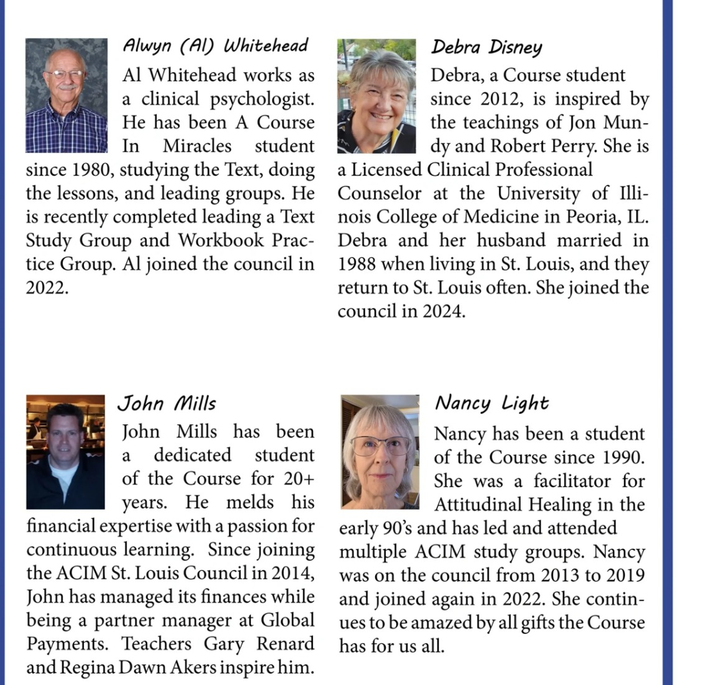
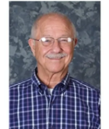
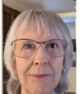
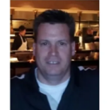
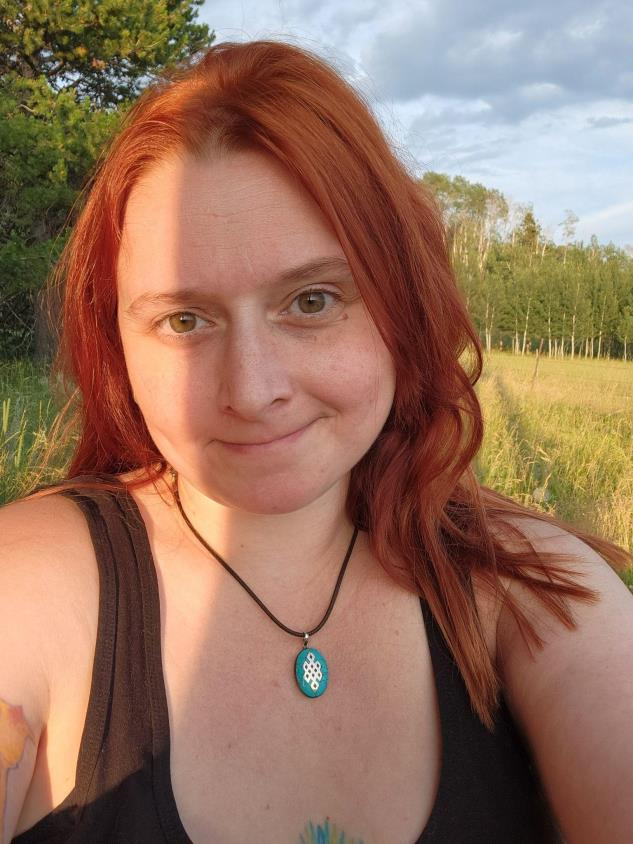
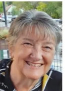

Incorporated in Missouri · Est. 2005
The ACIM
St. Louis Council
A nonprofit organization dedicated to supporting and connecting A Course in Miracles students throughout the greater St. Louis region.
To promote education, interaction, and sharing among local ACIM study groups and students — both current and future — by connecting them through communications, resources, and events.
To develop greater love and compassion within our region by starting with ourselves.

The Council is composed of St. Louis-area ACIM students who volunteer their time to serve the community. There are currently 300+ ACIM students in the region.

Al Whitehead works as a clinical psychologist. He has been an A Course in Miracles student since 1980, studying the Text, doing the lessons, and leading groups. He recently completed leading a Text Study Group and Workbook Practice Group.

Nancy has been a student of the Course since 1990. She was a facilitator for Attitudinal Healing in the early 90's and has led and attended multiple ACIM study groups. Nancy was on the council from 2013 to 2019 and joined again in 2022. She continues to be amazed by all the gifts the Course has for us all.

John Mills has been a dedicated student of the Course for 20+ years. He melds his financial expertise with a passion for continuous learning. Since joining the ACIM St. Louis Council in 2014, John has managed its finances while being a partner manager at Global Payments. Teachers Gary Renard and Regina Dawn Akers inspire him.

For no discernible reason, Erica was a very serious religious kid from the start, and in 2007 at age 19 she was made aware of the Course through Esoteric Christianity by Richard Smoley; confounded by the dense blue books, she was led to a key to unlock its mysteries for her, Gary Renard's Disappearance of the Universe, and has been an ACIM student as her primary spiritual practice since. Erica is a cat lady, an artist, and a teacher. She also enjoys tarot cards and talking about dreams.

Debra, a Course student since 2012, is inspired by the teachings of Jon Mundy and Robert Perry. She is a Licensed Clinical Professional Counselor at the University of Illinois College of Medicine in Peoria, IL. Debra and her husband married in 1988 when living in St. Louis, and they return to St. Louis often. She joined the council in 2024.
The Council welcomes suggestions, volunteers, and anyone who wants to contribute to the St. Louis ACIM community. Reach out — we'd love to hear from you.
Contact the Council Find us on Facebook